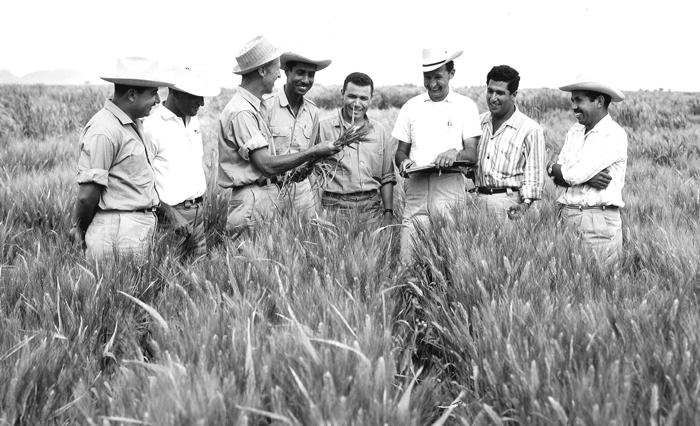

Daisy Nakitende
The lady who inspires a billion youths

Daisy Nakitende, trains youths at Kampabits on how to build websites - part of how to enhanse youths in aquiring Information Technology skill -war on unemployment among youths today.
Here's a time line of Daisy's life:
- 1996 - Born in Kampala, Uganda.
- 2000 - Started school in Ggaba at Maranatha Christian School.
- 2002 - Continued my journey of studying by joining the primary level.
- 2008 - Completed my primary level by seating for the Primary Leaving Examinations.
- 2009 - Continued my journey of studying by joining the secondary level.
- 2012 - Completed my Ordinary level at St.Mary's Senior Secondary School.
- 2014 - Completed my Advanced level at St.Kizito High School.
- 2015 - Began my journey of aquiring skills in Information Technology at Kampabits.